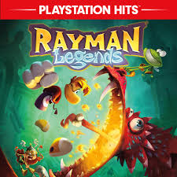

REGRESAR
RAYMAN

Rayman, Globox y los Diminutos andan vagando por un bosque encantado cuando descubren una misteriosa tienda de campaña llena de cautivadores cuadros. Al mirarlos con más atención, se dan cuenta de que cada cuadro parece contar la historia de un mundo mítico. Mientras observan un cuadro que muestra un escenario de aspecto medieval, son succionados de repente dentro del cuadro, entrando en ese mundo que representa, y es ahí donde la aventura comienza. La pandilla deberá correr, saltar y abrirse paso a través de cada mundo para seguir vivos y correteando, y descubrir los secretos de cada uno de los legendarios cuadros.
Modo Cooperativo de 4 Jugadores
Ahora, pueden unirse más jugadores a la diversión. Con 4 mandos de Wii™ y el nuevo mando de Wii U, hasta 4 jugadores podrán jugar al mismo tiempo. Y si en cualquier momento alguien quiere entrar o salir, el juego continuará sin interrupción.
Modo de juego táctil
Rayman® Legends aprovecha al máximo las capacidades del Nintendo Switch y de su control. Desmonta tu Switch y utiliza la pantalla táctil para acabar con los enemigos, manipular plataformas, cortar sogas para liberar el camino y mucho más. ¡Con la tecnología de giroscopio puedes mover la plataforma rotatoria y, además, hay muchas otras más sorpresas por llegar!